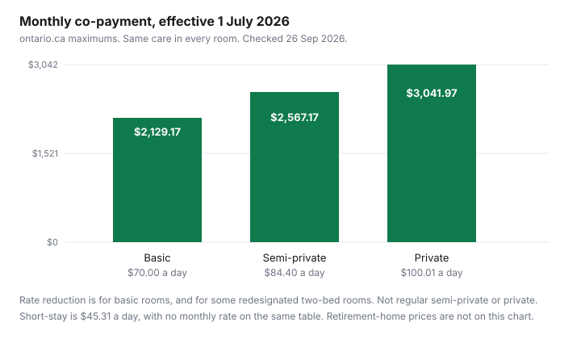

Healthcare · Canada
Long-Term Care Costs in Ontario (2026): Basic vs Private Rooms, the Rate Reduction, and Planning Ahead
A long-term care placement in Ontario comes with a co-payment for accommodation and meals. The ministry sets the maximum. The home does not get to invent a higher basic rate. The care, the page says, is the same whether the room is basic, semi-private, or private. What changes is the co-payment, and whether a low income can reduce the basic rate. This page uses the figures on ontario.ca that were in force on 26 Sep 2026, effective 1 July 2026. It is education, not a placement decision, not tax advice, and not a prediction of the next July’s rates. Rates are reset each July. If you are reading this after the next change, use the page, not this table.
Key takeaways
- From 1 July 2026, the maximum long-stay co-payments are $70.00 a day or $2,129.17 a month for basic, $84.40 a day or $2,567.17 a month for semi-private, and $100.01 a day or $3,041.97 a month for private. Short-stay is $45.31 a day, with no monthly rate on that table.
- The rate reduction applies to basic accommodation, and to spouses or partners who live together in a two-bed semi-private room that has been redesignated as basic. Regular semi-private and private rooms are not eligible.
- There is no single income cutoff. A person with no dependant deductions and no income exclusions would likely qualify if income is under $27,338, using the basic rate effective 1 July 2026. The formula is monthly: annual net income divided by 12, minus a $149 comfort allowance, minus any dependant deduction.
- Apply within 90 days of moving in. The reduction can reach back up to 90 days before the application. Reapply every year between 1 July and 28 September if you want the reduced rate to start on 1 July. Assets such as a house are not in the income test.
- A retirement home is not this co-payment. The CRA says you generally cannot claim the entire retirement-home bill. Full-time nursing-home fees can be a medical expense, and claiming the full fee blocks the disability amount for that person. Confirm with the CRA.
What the provincial accommodation co-payment covers and how rates are set each July (verify current rates)
Every long-term care resident contributes to accommodation and meals. That contribution is the co-payment. It is based on the room, not on a menu of care levels. The Ministry of Long-Term Care sets the maximum each year. The maximums are the same in for-profit and not-for-profit homes. The page that states the current numbers was updated 10 July 2026 and titles the table “effective July 1, 2026.”
The co-payment is not the whole invoice a family sees. Homes may charge extra for optional services: hairdressing, cable, telephone, internet, and transportation. Those extras are not in the maximums below. Ask for them as a separate list before move-in day, and do not let them be folded into a sentence that “the rate is about two thousand.” The rate is the figure in the table. The extras are a second piece of paper.
July is the reset. The rate-reduction program year also runs from 1 July to 30 June. A number you were quoted in May can be a pre-July number. Ask which effective date the quote uses. This article will be wrong on the morning a new July table is published. The fix is the ontario.ca page, not a memory of this one.
Basic vs semi-private vs private rooms: cost and wait-list trade-offs
Basic is the room the subsidy can touch. Semi-private and private cost more and, if they are regular semi-private or private rooms, they are outside the rate reduction. The wait for a basic bed and the wait for a private room are placement questions this page does not answer with a number of days, because no wait-time table was opened. The money trade-off is still clear. Choosing a private room means accepting $3,041.97 a month instead of $2,129.17, a difference of $912.80 a month, at the 1 July 2026 maximums, and giving up the rate reduction if income is low. Choosing basic means the lower maximum, and a possible reduction, with whatever wait the placement office actually has. Get that wait from the placement coordinator. Do not subtract a guessed number of months from the private-room premium and call it a saving.
The daily rates are $70.00, $84.40, and $100.01. The monthly rates are not the daily rate times 30. Ontario publishes both, and the monthly figures are the ones to budget: $2,129.17, $2,567.17, and $3,041.97. Short-stay is $45.31 a day and the monthly cell is marked not applicable. A short stay is not a discounted way to live in the home for a year. It is a different category on the same table.
Spouses who want to share a room should ask whether the two-bed room can be redesignated as basic. The rate-reduction page allows a reduction for spouses or partners who live together in a two-bed semi-private room that has been redesignated as basic. A regular semi-private room, even with a spouse in the other bed, is not eligible. The redesignation is a status the home and the ministry recognize. It is not something you create by asking for the lower bill.
The rate reduction for low-income residents: how the income test works
If the basic co-payment does not fit the income, the Long-Term Care Rate Reduction Program can lower it. There is no single income threshold, because the calculation uses income, a comfort allowance, and any dependant deduction. The page’s own illustration, for a person claiming no dependant deductions and no income exclusions, is that they would likely qualify if income is under $27,338, based on the basic rate effective 1 July 2026. “Likely” is the page’s word. It is not a guarantee, and it does not apply to someone supporting a spouse or child in the community.
The formula on the page is: reduced monthly rate equals annual net income divided by 12, minus the comfort allowance, minus dependant deductions. Start with line 23600 on the latest notice of assessment. Add income that is coming in and is not on that notice. You may subtract taxes payable, registered disability savings plan income, and a Canada Pension Plan or Quebec Pension Plan death benefit. Some other amounts can be excluded if they relate to a period when you were not receiving a reduction and the money is gone, or if a lump sum was used to pay an Assistive Devices Program device or the accommodation itself. Assets are not income. A house you own is not added to line 23600. Do not use this income method if you are eligible for the Ontario Disability Support Program or you are moving between benefit systems. The page says not to.
The comfort allowance is income kept for personal needs, and the page names clothing, telephone, cable, and the Ontario Drug Benefit’s mandatory prescription co-payment as examples. The monthly amount it states is $149, and it says the amount may fluctuate if income changes during the year. A dependant deduction is possible for a spouse or a child living in the community, and only after that person has claimed the income available to them. A spouse, for this deduction, must have been living with you immediately before you entered the home, or immediately before you entered an earlier institution if you came from one. The spouse cannot be receiving or eligible for Old Age Security. A child qualifies under 18, or under 25 if they are financially dependent and in full-time school at a recognized secondary or post-secondary school. You do not get the deduction if the spouse or child is also in a long-term care home, hospital, or other government institution, or if you or they are on Ontario Works or the Ontario Disability Support Program as described on the page.
You apply after you move in, not before. Apply within 90 days of moving in. The reduction can apply for up to 90 days before the date you submit the application, so a late form inside that window still reaches backward, and a form after 90 days leaves days at the full rate. The home gives you the form and sends it to the ministry. You get a rate statement. Most people who receive a reduction still pay something. You reapply every year because income changes. For the reduced rate to start on 1 July, reapply between 1 July and 28 September. If you do not, the home can charge the full basic rate. If you reapply after 28 September and still qualify, the reduced rate reaches back up to 90 days before you submitted it. If you are already on a reduction in the year you turn 65, you reapply one month after your birthday, which is when benefits often change. Before you apply, the page says to make sure Old Age Security and the Guaranteed Income Supplement are in pay if you are 65 or older, and the Ontario Disability Support Program if you are under 65 or not eligible for Old Age Security. Spouses who are both eligible for Old Age Security can look at the Involuntary Separation form. The form’s name is not a comment on the marriage. The home’s staff, or LTC.RateReduction@ontario.ca, or the Long-Term Care Family Support and Action Line at 1-866-434-0144, are the help lines on the page.
Retirement home vs long-term care: who pays for what
A retirement home is not a long-term care home, and it is not funded by this co-payment schedule. No retirement-home rent, care package, or “starting at” price was opened on a government page for this draft, so none is printed. If a brochure offers a monthly figure, that figure is the operator’s price, not a ministry maximum. Compare it with $2,129.17 only after you know you are allowed to choose. Long-term care is a placement in a licensed home with a regulated co-payment and a regulated rate reduction. A retirement home is a tenancy plus whatever care the contract sells. Read the contract for what happens when care needs rise. The people who pay are different: the resident pays the retirement-home contract, and may pay the long-term care co-payment later if they move. Families sometimes pay both during a transition month. Write those two months down before you give notice on an apartment.
The same household may also be supporting a parent at home. The cost of that arrangement, including housing, is a different guide: multi-generational living costs. Do not paste a retirement-home brochure into that worksheet and call it long-term care.
Tax: long-term care fees and the medical expense or disability credits
The CRA’s attendant-care page says all regular fees paid for full-time care in a nursing home, or for specialized care or training in an institution, can be eligible medical expenses. It describes a nursing home as a facility that gives full-time care, including 24-hour nursing care, to people who cannot care for themselves, and it says any facility with those features can be treated as a nursing home. Fees that can be included, when they are part of that full-time care, are listed on the page. Salaries and wages of attendants are part of the discussion, and so is food if it is part of the eligible fee structure the page describes. Read the page against the invoice. A haircut and cable television that the Ontario co-payment page lists as optional extras are not automatically the same as the accommodation co-payment.
You generally cannot claim the entire amount paid for a retirement home or a home for seniors. You can claim salaries and wages for care in that kind of residence if the person qualifies for the disability tax credit. Eligibility for the credit can also be required for attendant-care wages. The credit needs Form T2201 approved by the CRA.
There is a fork. If you claim the full nursing-home fees for full-time care as a medical expense, nobody, including you, can claim the disability amount for that same person. You can claim the disability amount together with only the part of the nursing-home fees that is salaries and wages for attendant care, up to the limit on the CRA chart, and you need a breakdown from the home. RC4065, the medical-expenses guide titled 2025 on the page opened 26 Sep 2026, says the federal limit for those attendant-care salaries is up to $10,000, or $20,000 if the person died in the year, and that for Ontario residents the provincial limit is up to $17,627, or $35,253 if the person died in the year. That is the 2025 guide’s number. Use the guide year that matches the return. Do not assume the 2025 Ontario limit is the 2026 limit without opening the guide for that return. The household map of credits is the tax-credits guide. A critical-illness policy is a different tool and does not pay this co-payment by default. What that policy does pay is the critical-illness guide.
Family checklist: paperwork, spouse finances and timing
Before the move, ask the placement office which room type is actually offered, whether a couple’s room can be redesignated as basic, and which July the quoted rate uses. List Old Age Security, the Guaranteed Income Supplement, and any pension on one page, and find the notice of assessment. If a spouse will remain at home, ask whether the dependant-spouse rules fit before you assume the resident’s whole income stays with the household. The retirement insurance review is the place to check whether a private health plan still makes sense once accommodation is a co-payment and drugs may be billed under the long-term care drug rules. Do not cancel a plan on move-in day.
In the first 90 days, file the rate-reduction application if income is near or under the illustration, even if you are not sure. A form inside 90 days protects days. A form you postpone until “we see how it goes” can leave a month at $2,129.17 that the reduction would have lowered. Keep the rate statement. In late June, put 1 July to 28 September on the calendar so the next year’s reduction does not lapse. If the resident turns 65 during a reduction year, the reapplication is one month after the birthday, not the following July. Optional charges stay on a separate list so they are not mistaken for the co-payment when someone does the tax return.
| Accommodation | Daily rate | Monthly rate | Rate reduction |
|---|---|---|---|
| Long-stay basic | $70.00 | $2,129.17 | Yes, if the income calculation qualifies. |
| Long-stay semi-private | $84.40 | $2,567.17 | No, unless a two-bed room shared by spouses or partners is redesignated as basic. |
| Long-stay private | $100.01 | $3,041.97 | No. |
| Short-stay | $45.31 | Not applicable on the ministry table | Not described as eligible for the reduction. |
| Step | What you do | Document |
|---|---|---|
| 1. Benefits first | Confirm Old Age Security and the Guaranteed Income Supplement if 65 or older, or the Ontario Disability Support Program if that is the path. | Benefit letters. Involuntary Separation form if both spouses should be calculated separately. |
| 2. Income | Annual net income from line 23600, plus new income, minus the exclusions the page allows. Do not add the house. | Notice of assessment. Proof of any excluded amount. |
| 3. Formula | Divide by 12, subtract the $149 comfort allowance, subtract any dependant deduction the page allows. | The home’s application, not a homemade spreadsheet as the filing. |
| 4. Timing | Apply within 90 days of moving in. Reapply from 1 July to 28 September for a 1 July start. One month after a 65th birthday if a reduction is already in pay that year. | Application to the home. Rate statement when it returns. |

Sources & date stamps
- Ontario, Paying for long-term care, updated 10 July 2026. Co-payment table effective 1 July 2026. Rate-reduction formula, $149 comfort allowance, $27,338 illustration, 90-day rule, 1 July to 28 September reapplication, line 23600. Opened 26 Sep 2026.
- CRA, attendant care and care in a facility. Nursing-home fees, retirement-home limit, disability-amount fork. Opened 26 Sep 2026.
- CRA, RC4065 Medical Expenses, titled 2025 on the page opened 26 Sep 2026. Attendant-care salary limits $10,000 and $20,000 federally. Ontario $17,627 and $35,253. Confirm the guide year for the return you file.
- No retirement-home price was opened. None is stated.
Frequently asked questions
How much does long-term care cost in Ontario?
From 1 July 2026, the maximum long-stay co-payments are $2,129.17 a month for basic, $2,567.17 for semi-private, and $3,041.97 for private, with daily maximums of $70.00, $84.40, and $100.01. Short-stay is $45.31 a day. The ministry sets these maximums for every home, and the care level does not change with the room. Optional charges such as hairdressing and cable are extra.
What does the co-payment cover?
It is your contribution to accommodation and meals, not a fee for a higher level of nursing care, because every resident is entitled to the same level of care regardless of room. Homes may charge extra for optional services, including hairdressing, cable, telephone, internet, and transportation. Those extras are not inside the maximums. Ask for them on a separate list.
How does the rate reduction work?
The reduced monthly rate is annual net income divided by 12, minus a $149 comfort allowance, minus any dependant deduction the rules allow, and there is no single income cutoff. A person with no dependant deductions and no income exclusions would likely qualify under $27,338 of income, using the basic rate effective 1 July 2026. Apply within 90 days of moving in, and reapply between 1 July and 28 September so the reduced rate starts on 1 July. Regular semi-private and private rooms are not eligible.
Is a retirement home cheaper than LTC?
This guide cannot say, because no retirement-home price was on a government page opened for it. A retirement home is not funded by the long-term care co-payment. You pay the contract the operator offers, and that contract is not capped at $2,129.17. Compare a real quote with the basic co-payment only after you know both options are actually available.
Can LTC fees be claimed on taxes?
Regular fees for full-time care in a nursing home, including food, accommodation, and nursing care on the CRA list, can be eligible medical expenses. Claiming the full fee means nobody can claim the disability amount for that same person. You can claim the disability amount together with only the attendant-care wage portion, up to the limit in the guide for that tax year. A retirement-home bill is generally not claimed in full, so confirm the split with the CRA.